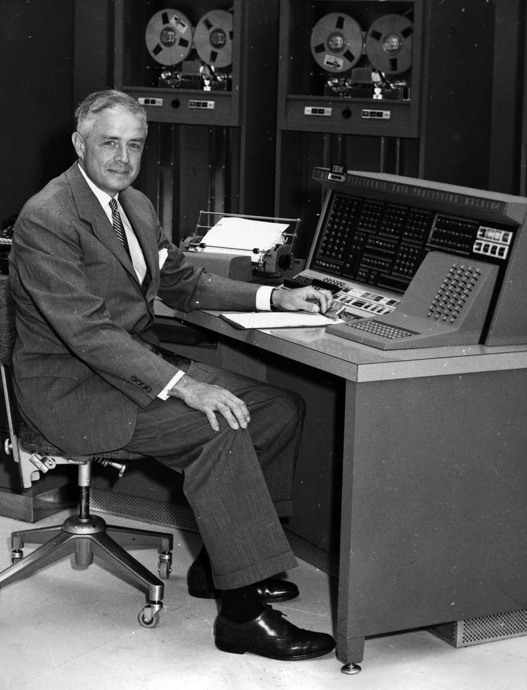

- Name
- DOB
- DOD
- Occupation
February 17, 1874
June 19, 1956 (aged 82)
Chairman and CEO of IBM
|  | |
|
Thomas John Watson Sr February 17, 1874 June 19, 1956 (aged 82) Chairman and CEO of IBM |
Thomas John Watson Sr. (February 17, 1874 June 19, 1956) was an American businessman who served as the chairman and CEO of IBM. He oversaw the company's growth into an international force from 1914 to 1956. Watson developed IBM's management style and corporate culture from John Henry Patterson's training at NCR. He turned the company into a highly effective selling organization, based largely on punched card tabulating machines. A leading self-made industrialist,he was one of the richest men of his time and was called the world's greatest salesman when he died in 1956.
Thomas J. Watson was born in Campbell, New York, the fifth child and only son of Thomas and Jane Fulton White Watson. His four older siblings were Jennie, Effie, Loua, and Emma. His father farmed and owned a modest lumber business located near Painted Post. Thomas worked on the family farm in East Campbell, New York and attended the District School Number Five in the late 1870s. As Watson entered his teen years he attended Addison Academy In Addison, New York.
Charles Ranlett Flint who had engineered the amalgamation (via stock acquisition) forming the Computing-Tabulating-Recording Company (CTR) found it difficult to manage the five companies. He hired Watson as general manager on May 1, 1914, when the five companies had about 1,300 employees. Eleven months later he was made President when court cases relating to his time at NCR were resolved.[ Within four years revenues had been doubled to $9 million. In 1924, he renamed CTR to International Business Machines. Watson built IBM into such a dominant company that the federal government filed a civil antitrust suit against it in 1952. IBM owned and leased to its customers more than 90 percent of all tabulating machines in the United States at the time. When Watson died in 1956, IBM's revenues were $897 million, and the company had 72,500 employees. Throughout his life, Watson maintained a deep interest in international relations, from both a diplomatic and a business perspective. He was known as US President Franklin D. Roosevelt's unofficial ambassador in New York and often entertained foreign statesmen. In 1937, he was elected president of the International Chamber of Commerce (ICC) and at that year's biennial congress in Berlin stated that the conference keynote would be "World Peace Through World Trade." That phrase became the slogan of both the ICC and IBM.
for more info visit the link